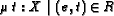

As sets are paradigmatic for the specification level of Z, they are for the execution level. Set objects - relations or functions - are eventually defined by (recursive) equations, as in the following example, where we define natural numbers as a free type2, addition on these numbers and an order relation:
We may now execute under ZETA queries such as the following, where we ask for the numbers less then three:
These capabilities are similar to logic programming. In fact, we can give a translation from any clause-based system to a system of recursive set-equations in the style given for add, where we collect all clauses for the same relational symbol into a union of set-comprehensions, and map literals to membership tests .
A binary relation R can be applied, written as R e, which is syntactic sugar for the expression . This expression is defined iff their exists a unique t such that the constraint is satisfied; it then delivers this t. The set add is a binary relation (since it is member of the set ), and therefore we can for example evaluate
Note the semantic difference of and y=R e: the first is not satisfied if R is not defined at e, or produces several solutions for y if R is not unique at e, whereas the second is undefined in these cases.
This difference is resembled in the implementation: application, -expressions, and related forms are realized by encapsulated search. When resolving the constraint (the unsugared form of y = R e), the constraint is resolved in a different search space then the outer constraint (which just waits for the completion of the inner search).
Encapsulated search is not allowed to produce bindings for variables belonging to outer contexts. If an encapsulated search requires the binding of a context variable, it residuates until the context provides the binding. One reason for this behavior is that we may use the context variables in negative positions (i.e. , where a binding for x obviously is a semantic error). Another reason is that encapsulated search gives us a tool to control resolution order in a natural way - it introduces functional reduction into our framework.
As a consequence, in our above example, , if we have e = x, where x is a variable from an outer context (i.e. if we have originally written y = R x), the encapsulated search residuates until x is bound in the context - if the resolution of actually requires a binding for x 3.
For illustration, we redefine the less relation from the previous section as follows:
Here, the encapsulated search for add(x,y) cannot continue, since it
is not allowed to produce bindings for the context variables x. In
the above diagnostics, {_y|(_x,_y) IN _S} is the encapsulated
search goal for application, which is parameterized over _x and
S. The parameter names are in a different name scope, hence
the parameter binding _x = (_x,S(...)) is not cyclic.
The constraint residuates for the variable _x, which is the
value assigned to x.
As functions are first-order citizens in functional languages, sets are in ZAP. For example, we define a function describing relational image as follows:
A query for the relational image of the add function over the cartesian product of the numbers less then three yields in:
In a similar style as above most constants of the Z toolkit (domain restriction and so on) can be naturally defined.
Universal quantification is executable if it deals with finite ranges. For example, we can define a generic constant denoting the set of partial functions:
Universal and unique existential quantification are resolved by enumeration (an instance of encapsulated search). Thus, if we try to check whether add is a partial function, we get:
The reason for this behavior is that the domain of add is not finitely enumerable:
However, if we restrict add to a finite domain it works:
Above, restricts the domain of R to the set A; the existential quantor is used to introduce a local name in the predicate.
In Z, a schema denotes a set of bindings, where bindings are tuples (records) with named components. The schema calculus operators, then, are essentially set operations with special implicit signature translations.
Therefore, the schema calculus is fully executable. For instance
For more examples see the birthday-book specification in the
examples directory of the ZETA distribution.
In Z specifications we often find declarations of the kind , imposing that f has type on the one hand, and that on the other. As we have seen in section 2.4, the check whether a value is a partial function is only executable for finite domains.
In order to conveniently support this specification style, ZAP treats declarations x:E as assumptions. Hence the membership test implied by x:E is discarded for execution.
If x:E is actually a non-redundant property, it has to be explicitely denoted in the constraint part of schema text. For this reason, in the definition of pfun in the previous section, we have written instead of .
When providing definitions of relations and functions one has to use equational forms. For example, the factorial function would be typically specified in Z by axioms of the kind:
facNonExec
A definition of this form is unamenable to execution. Instead one may write:
facExec1
or
facExec2
The automatic conversion of axioms of the first form to definitions of the later forms may become a feature of future versions of ZAP4.
Free types are translated by ZAP to sets which generate the type's domain. Consider the following definition:

We can execute:
Constructors are functions as other functions are, which have the property that they are (partial) injections. Partiality may be present because of the restrictions given for the domain in a free type declaration.
We can use to convert a constructor to a projection, and to test whether a value is a variant of this constructor.
Regarding the ``matching'' of constructed values. in general the constraint ys' = cons(x,ys) can not be used if x and ys are free. The call to cons will residuate until x and ys are bound, since the encapsulated search implementing the call tries to execute the constraint , to which end it is not allowed to produce bindings for x and ys (cf. section 2.2). Thus, for matching one has to generally write .
However, the constraints on the domain of a constructor can be completely discarded, using the following declaration form (cf. section 2.6):
Now it becomes possible to write ys' = cons(x,ys) for matching, since there are no constraints imposed on x and ys which need to be resolved in the encapsulated search of the constructor application. Note, however, that now the assertion that the first component of cons is in the range is not longer checked for a constructor call at runtime.
Note that the above treatment is even necessary if we have total constructor functions, e.g. : the reason is that is a constraint which though semantically is true, acts as a generator for values of MySeq.
The genericity concept of Z allows to provide instantiations with particular sets. For instance, given the definition of the identity relation:
...we can provide instantiations as follows:

On the implementation level this feature requires to represent each generic constant as a function over its instantiation. Since in most cases the instantiation is universal and imposes no constraints this is a serious efficiency problem.
For this reason, ZAP compiles for each generic constant two versions: one as a function over the instantiation argument, and the other as a constant optimized for the case that the instantiation is universal. Which of these versions is selected is controlled by whether an instantiation of a generic constant is inferred or provided: for inferred instantiations the optimized version is used.
Though it is possible in our model to represent e.g. natural numbers
by constructors Z and
 ,
as shown in the previous
sections, enabling resolution techniques on them, this approach is
hopelessly inefficient for real applications. Thus numbers are
actually integrated by a native implementation, and resolution
techniques for arithmetic constraints are not available for them
5
,
as shown in the previous
sections, enabling resolution techniques on them, this approach is
hopelessly inefficient for real applications. Thus numbers are
actually integrated by a native implementation, and resolution
techniques for arithmetic constraints are not available for them
5
To generate extensional number ranges,  may be used:
may be used:
Note that  forces the storage of a set extension
in memory. Thus n and m should be in a moderate range.
Use
if you do not actually want
to enumerate a range.
forces the storage of a set extension
in memory. Thus n and m should be in a moderate range.
Use
if you do not actually want
to enumerate a range.
The resolution techniques for subset constraints in our model are relatively weak (they capture just functional and logic computation, not more). For example, we are not able to enumerate the set (which equals ), even if A is finitely enumeratable (indeed, we can test whether a ground value is in this set).
Technically, the constraint resolution system of ZAP has problems with the following kind of constraints: